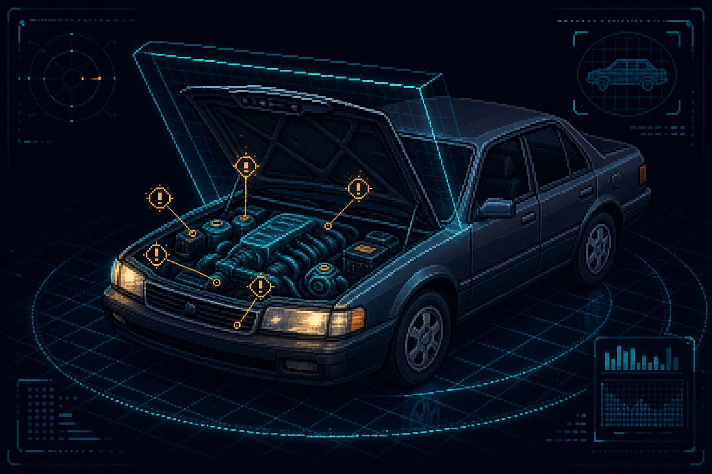
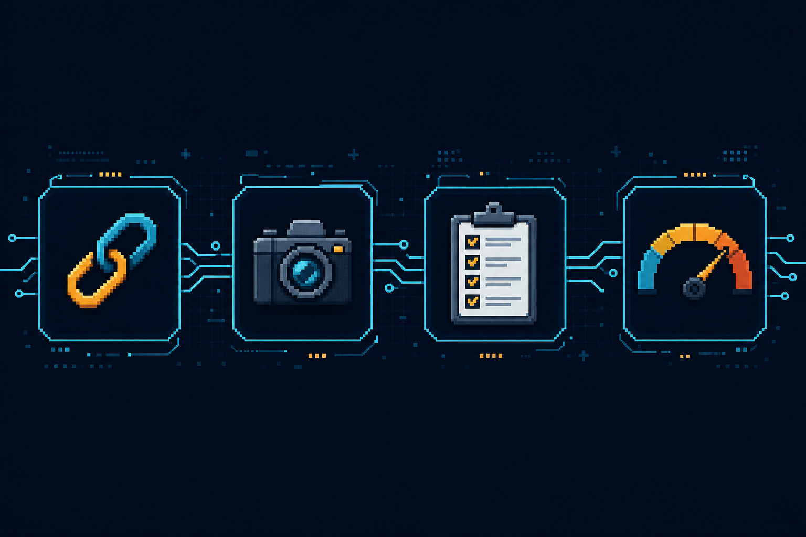
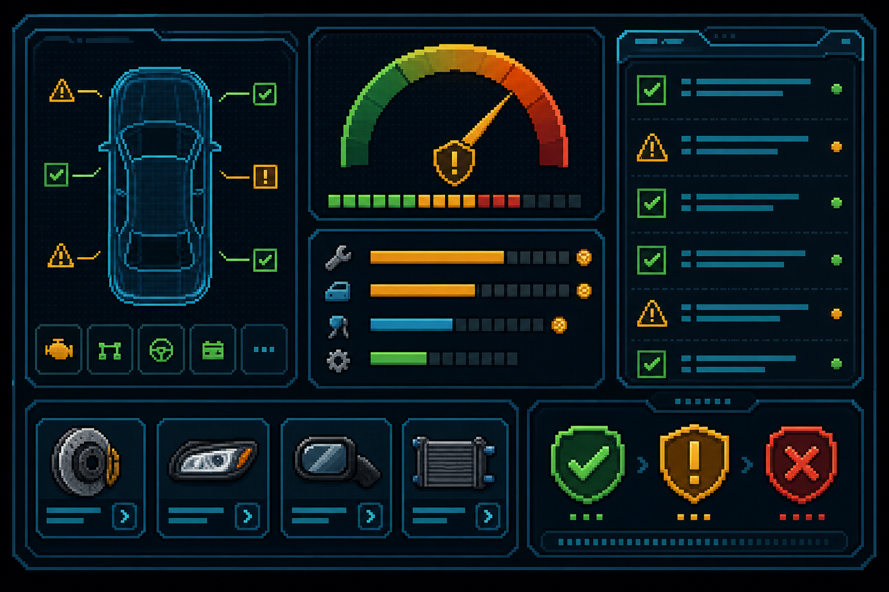

Кидаешь ссылку на объявление — система находит риски, считает ремонт и собирает персональный чеклист осмотра. За 30 секунд, без сюрпризов.

Четыре шага от ссылки до решения «брать или бежать».
Вставь объявление с любой площадки или заполни марку, год, пробег и цену сам.
Добавь фото и то, что заметил по объявлению или со слов продавца.
Получи слабые места модели и персональный чеклист для очного осмотра.
Узнай стоимость ремонта, выгоду перепродажи и итог: брать / проверять / отказ.

Безопасно купить подержанное авто и не попасть на скрытый ремонт.
Быстро оценить риски, объём вложений и потенциальную прибыль по сделке.
Структурированный отчёт, в котором сразу видно: риски, деньги, что менять и где купить.
Вердикт, risk score, риски с доказательствами и смета ремонта.
Что менять, наличие и ссылки на предложения с ценами.
Что и как проверять лично: визуально, на тест-драйве, по OBD-II.
Все прошлые проверки и сравнение вариантов между собой.
